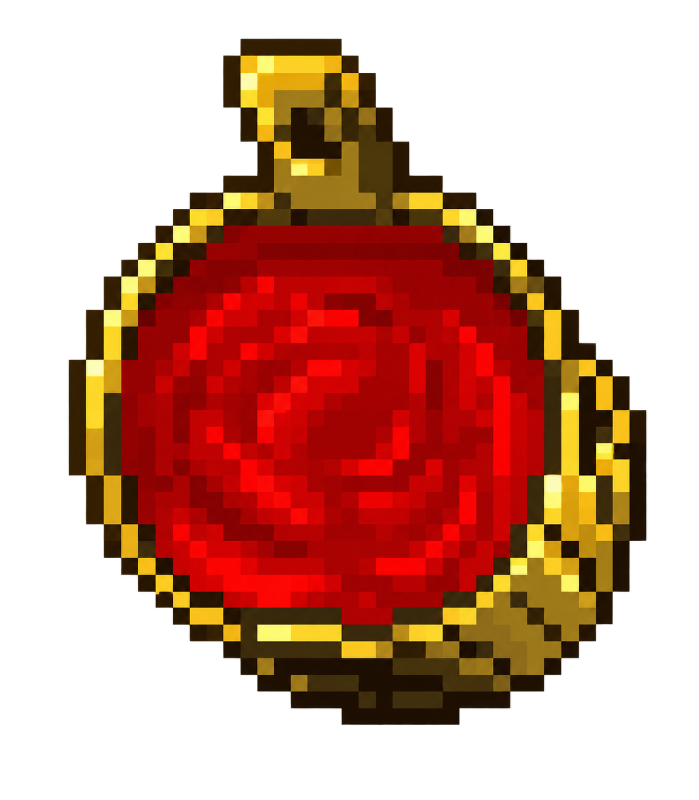
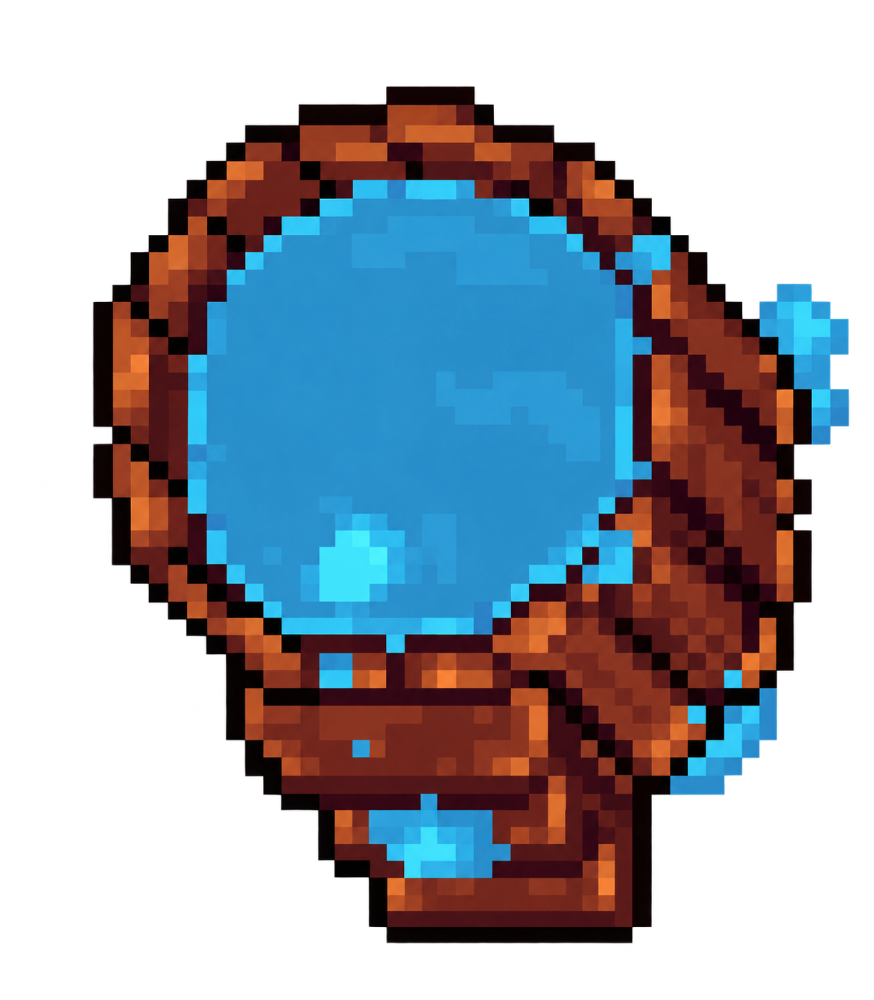
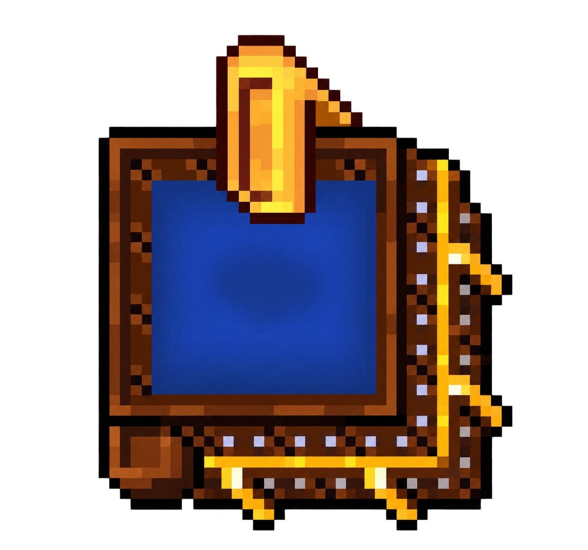
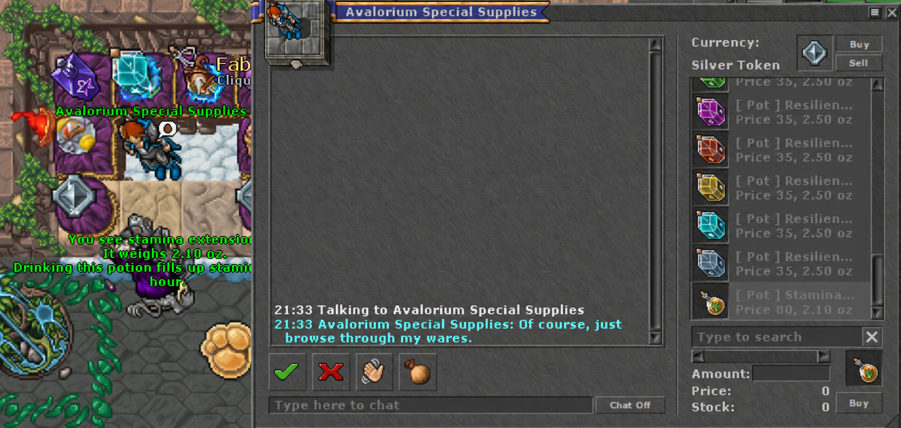

Como a stamina funciona
A stamina representa o tempo de caça com ganho de experiência. O limite normal é de 42 horas, e cada minuto caçando consome um minuto de stamina.
Premium recebe 50% de experiência extra. Free Account recebe experiência normal.
A experiência é recebida normalmente, sem bônus adicional.
Não concede experiência. Ao chegar a 0h, o personagem também deixa de receber loot.
Formas de recuperação
Offline
Os primeiros 10 minutos desconectado não contam.
Até 39h: +1 min a cada 2 min. Na faixa verde: +1 min a cada 4 min.
PZ ou House
Abaixo de 39h: +2 min por minuto.
Entre 39h e 42h: +2 min a cada 2 min.
Training Dummy
Enquanto ataca um dummy, recupera +1 min a cada 2 min, até alcançar 42h.
Banheiras e bônus

Exercise Bath
Não soma recuperação além da House/PZ.
+12% skill e +10% velocidade nos exercícios.
Store: 500 Tibia Coins
Stamina Bath
+3 min por minuto, inclusive na faixa verde, até 42h.
Não concede bônus de treino.
Store: 500 Tibia Coins
Deluxe Complete Bath
+3 min por minuto, até 42h.
+15% skill e +12% velocidade nos exercícios.
Store: 1.500 Tibia Coins| Stamina inicial | Só banheira | Só PZ | PZ + treino | House + treino + banheira |
|---|---|---|---|---|
| 30h | 4h | 7h30 | 5h36 | Aprox. 2h18 |
| 35h | 2h20 | 5h | 3h36 | Aprox. 1h24 |
| 40h | 40 min | 2h | 1h20 | Aprox. 27 min |

Bottle e Extension
A partir do level 800, adquira o Stamina Quest Ticket com o Quest Master e conclua a quest para obter os itens especiais. O baú da quest pode ser aberto novamente após 72 horas.
Stamina Extension no NPC
Também é possível comprar a Stamina Extension diretamente no NPC Avalorium Special Supplies.
Ao usar, ela adiciona 1 hora de stamina ao personagem e respeita o cooldown de 24 horas.
